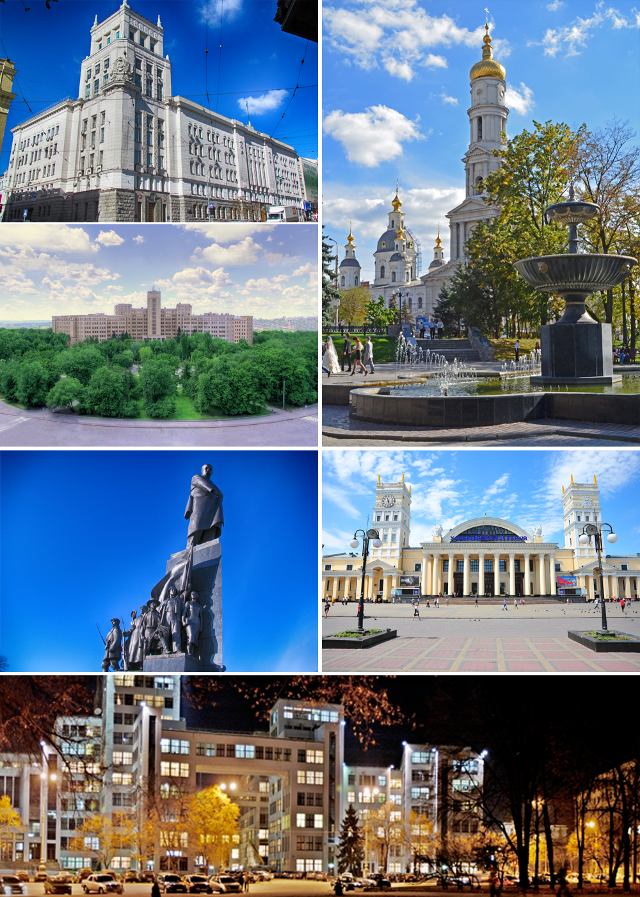

Kharkiv is the second-largest city in Ukraine. In the northeast of the country, it is the largest city of the Slobozhanshchyna historical region. Kharkiv is the administrative centre of Kharkiv Oblast and of the surrounding Kharkiv Raion, though administratively it is incorporated as a city of oblast significance and does not belong to the raion. Population: 1,439,036 (2017 est.)
The city was founded in 1654 and after a humble beginning as a small fortress grew to be a major centre of Ukrainian industry, trade and culture in the Russian Empire.
Kharkiv was the first capital of the Ukrainian Soviet Socialist Republic, from December 1919 to January 1934, after which the capital relocated to Kiev.
Presently, Kharkiv is a major cultural, scientific, educational, transport and industrial centre of Ukraine, with 6 museums, 7 theatres and 80 libraries.
Its industry specializes primarily in machinery and in electronics. There are hundreds of industrial companies in the city, including the Morozov Design Bureau and the Malyshev Tank Factory (leaders in world tank production from the 1930s to the 1980s); Khartron (aerospace and nuclear power plants automation electronics); the Turboatom (turbines for hydro-, thermal- and nuclear-power plants), and Antonov (the multipurpose aircraft manufacturing plant).
Some sources indicate that the city may have been named after the Hunnic name for 'swan': kharka.[better source needed] Other sources offer that the city was named after its near-legendary founder, Kharko (a diminutive form of the name Chariton, Ukrainian: Харитон, or Zechariah, Ukrainian: Захарій).
Cultural artifacts date back to the Bronze Age, as well as those of later Scythian and Sarmatian settlers. There is also evidence that the Chernyakhov culture flourished in the area from the second to the sixth centuries.
| Go to another page |
|---|
|
click
a link
|